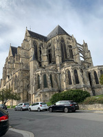
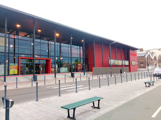

Mon top 3 des acitictés à faire sur Saint-Quentin

Basilique
La basilique Saint-Quentin est une église catholique située dans le centre-ville de Saint-Quentin, dans le département français de l'Aisne.

Palais des Sports
Le Palais des Sports est le lieu privilégié de Saint-Quentin pour voir s'y dérouler les grands événements sportifs, mais il dispose également de 6 salles spécifiques dédiées aux associations Saint-Quentinoises.

Cinéma
Avant-premières, événements et espaces privatisables dans une chaîne de cinémas multiplexes grand public.